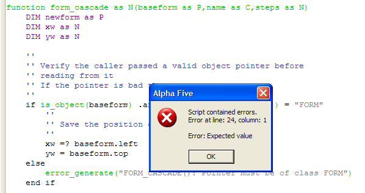

Compiling the Script
Before a script is run, it must be compiled. When a script is compiled, the Xbasic syntax you have written is checked and then turned into a series of compact machine instructions.
Alpha Anywhere compiles all scripts automatically the first time they are run.
To help find possible compilation errors ahead of time, you can force a script to be compiled at any time from within the Code Editor. To compile a script, press the F4 key while you are editing the script. The result of the operation appears on the Status line of the editor window. A successful compile will display the message "Compiled OK (xxx bytes generated)."
Alternatively, press Code > Check Syntax. This compiles your script and identifies syntax errors, if any.

See Also
The Xbasic Explorer, Password Protecting Your Scripts, The Code Editor